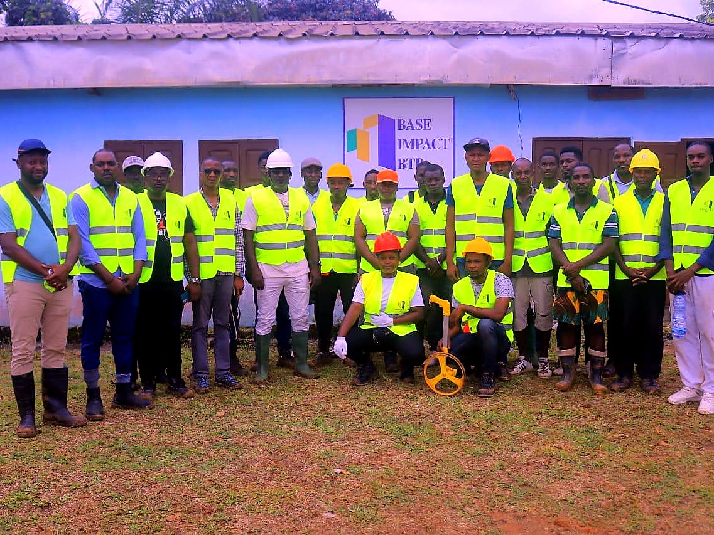
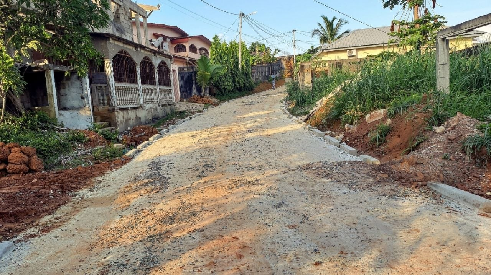

Diagnostic terrain
Comprendre l'état des accès, les contraintes du sol et les priorités du client avant d'engager les travaux.
Impact BTP Gabon Plus intervient sur les voiries secondaires, pistes rurales, accès de chantier et aménagements de proximité avec une méthode terrain claire.

Impact BTP Gabon Plus est née d'un constat simple : les infrastructures routières secondaires du Gabon méritent la même exigence que les grands chantiers nationaux. Fondée par des professionnels passionnés du BTP, notre entreprise s'est donné pour mission de construire des voiries fiables, durables et adaptées au terrain gabonais.
Chaque route que nous livrons est le fruit d'une connaissance intime du sol, du climat équatorial et des besoins réels des populations. Nous ne nous contentons pas de poser du bitume ; nous concevons des solutions qui traversent les saisons, supportent les pluies lourdes et servent les communautés année après année.

Comprendre l'état des accès, les contraintes du sol et les priorités du client avant d'engager les travaux.
Mobiliser les moyens adaptés et suivre les étapes de chantier pour garder une trajectoire claire.
Protéger les ouvrages par une préparation sérieuse, un compactage maîtrisé et un drainage cohérent.